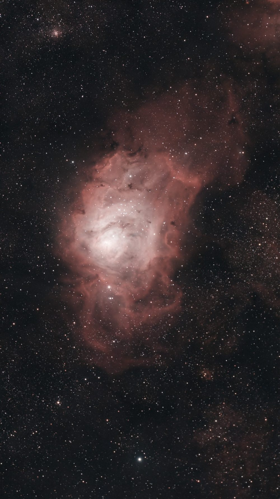
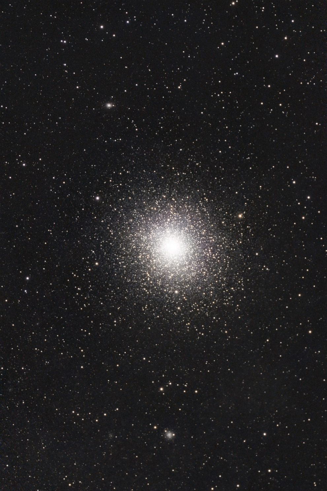
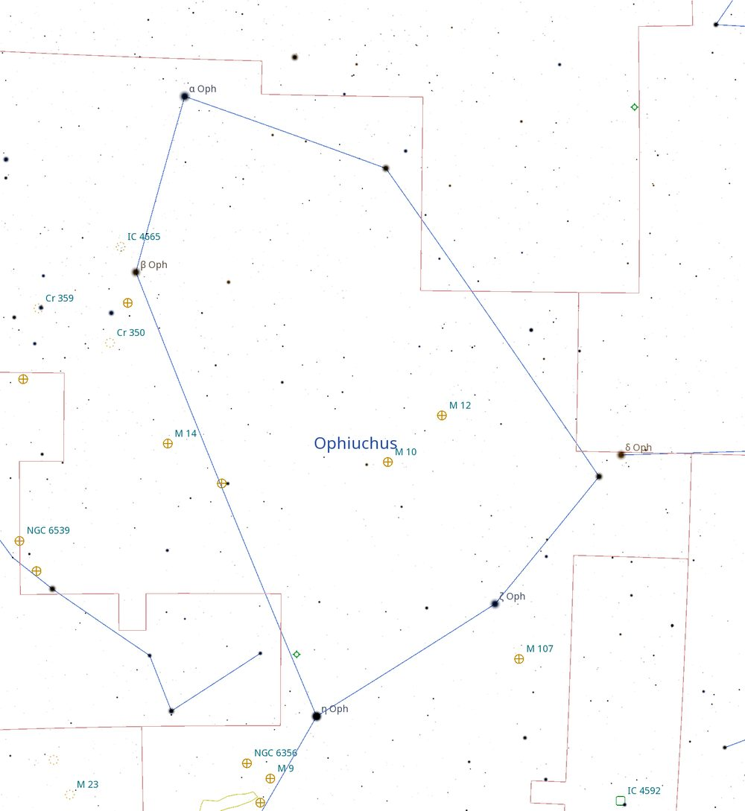
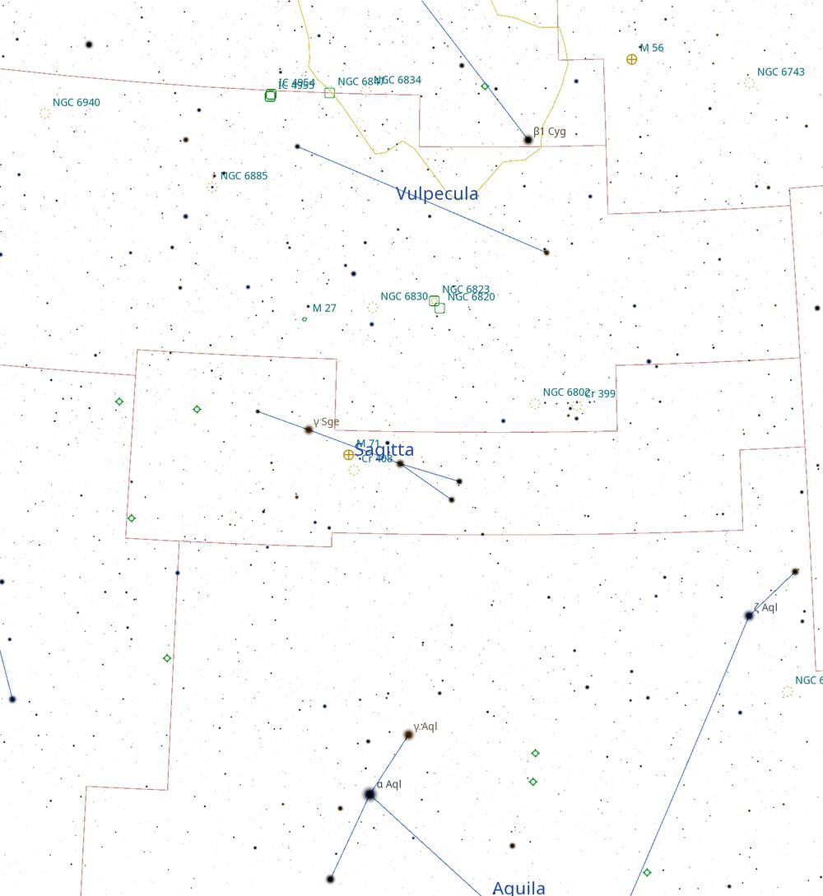
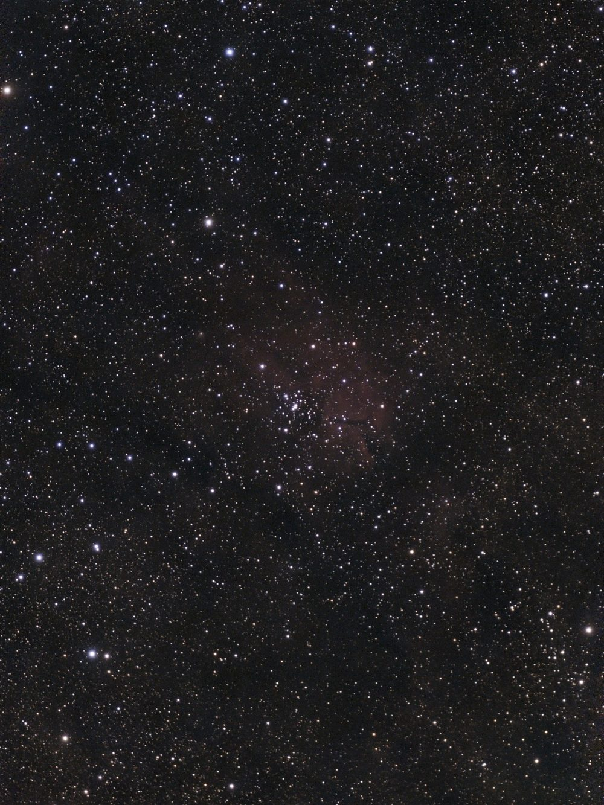
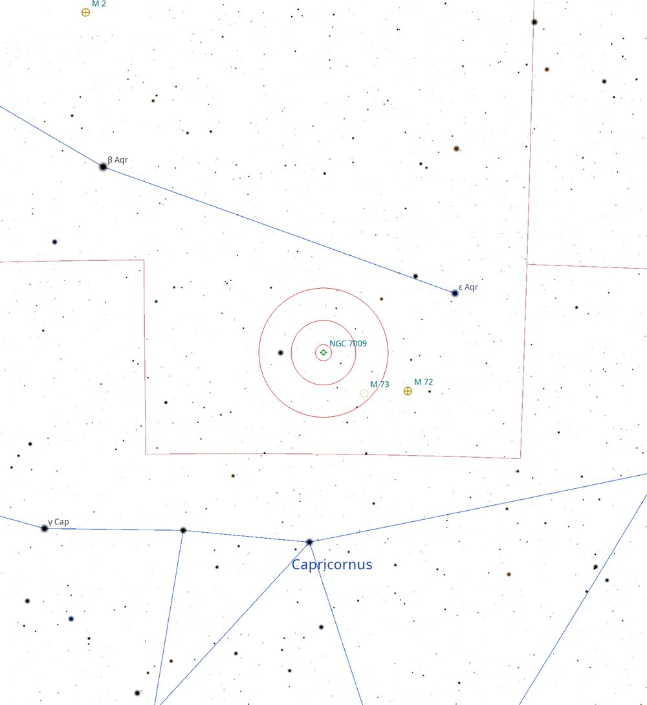

Deep Sky Notes — October 2026
The run of good observing weather at Wiruna continued during the October new moon weekend (I’ve certainly jinxed it now). Arriving at Wiruna late Friday afternoon, I was initially hesitant to set up the club scope. With one eye on the satellite forecast and the other on the high cloud on the northern horizon, I was betting it would be a night around the campfire. A bet I was about to lose. More patient minds prevailed and we wheeled out Lord Sidious by the main shed. Mark Notary had already made some repairs to the mirror cell meaning Lord Sidious was fully collimated once again. As twilight rolled on, the stars emerged and cloud remained (mostly) away.
With several members (new and old) stationing themselves in the orbit of Lord Sidious, it was mostly a night of visiting some celestial showstoppers and old favourites. The transparency and seeing were not ideal, as bands of high cloud seemed to be drifting in and out. We started by pointing towards the Sagittarius area to explore the Lagoon Nebula (M8) and Swan Nebula (M17). We dropped by Saturn on the way to trekking around the Magellanic Clouds from 47 Tuc (NGC 104) to the Tarantula Nebula (NGC 2070). At some point we attempted the Andromeda Galaxy (M31), however it was wholly unimpressive due to the high cloud and muck hanging around the horizon. We would revisit it on Saturday night for a much more impressive view.


Although we were only treated to a few hours of clear skies (albeit with less-than-ideal conditions), this was more than enough for me to simultaneously experiment with a new toy I had only acquired that week, a ZWO S50 Pro smart telescope. Now to be clear, I am not an astro imager. Lights, flats, darks; these sound like coffee orders to me. However, I was intrigued to see what a novice could pull off. Also to have something to show my friends and family when they ask, “what do you actually do at Wiruna?” In terms of set-up, it is an incredibly easy telescope to use. All that was required was a level base, switching it on, connecting it to my phone, and then clicking on the object I wanted to image. The rest was all taken care of by the telescope. I chose to start with the Lagoon Nebula (M8), an object I had attempted to image from my front driveway (Bortle 5-ish, an errant streetlight sits right in front of our house) earlier in the week. I left the telescope stacking 10-sec exposure for ~40min, whilst I focused on collecting photons with my own eyes through Lord Sidious. The results are seen in Figure 1. I also managed to collect another ~30min exposure of 47 Tuc (see Figure 2). Both these images have undergone minimal processing, only what is available within the Seestar app itself.
By 10pm the bands of high cloud started to disrupt the observing, and by 11pm we called it quits. There was very little dew and the temperature remained mild all night. The forecast was for overnight rain, so everything was packed away. And rain it did, most of Wiruna was awoken around 4am to heavy rain and wind, which had mostly blown over by daybreak.
The forecast for Saturday night was much more promising, and hopefully the previous night’s rain had helped to clear out the atmosphere. We again wheeled out the 22-inch by the main shed. I also set up my S50 Pro nearby and set it on a programmed run of targets that would run until dawn or the battery dying1. After a quick dinner I was by the 22-inch and completing the two-star alignment by 7.30pm. It was quickly apparent that the seeing and transparency were significantly better than the night before.

I started the night in the constellation of Ophiuchus which was perfectly placed in the north-west sky. It’s a large constellation tucked in between the familiar curve of Scorpius and the diamond-shaped wings of Aquila. With so many globular clusters in this region it is easy to overlook the collection of clusters in this constellation. I started by pointing the telescope at M10. This is a bright, 6.6 magnitude globular, stretching 20′ across (two thirds the size of the moon in the night sky). To find M10 start from Antares and look for the trio of η-Ophiuchi, ζ-Ophiuchi, and ε-Ophiuchi. M10 forms a triangle with ζ-Ophiuchi, and ε-Ophiuchi (See Figure 3). With a 13mm Ethos eyepiece (215× magnification, 0.47° TFOV) it resolved nicely all the way into the core. A unique feature of this cluster is the long lines of stars that seem to curve out from the halo all around, giving the appearance of a spiral shape (or tentacles). Once every 53 million years M10 crosses the galactic plane, giving rise to tidal tails of stars in its wake as gravity tugs away at its stars2. Only 3° away sits M12, another bright globular at 6.1 mag. This cluster also resolved nicely into very fine grains of pinpoint stars. Its halo seemed to spill out and taper off much more than its neighbours giving it an irregular shape. We also stopped by NGC 6633, an open cluster also in Ophiuchus. This is a large cluster which fills the FOV in the 31mm Nagler (90× magnification, 0.91° TFOV). The cluster is concentrated around 10–20 bright stars which are sparsely arranged into a few chains which overlap.


I then moved over to the constellation of Vulpecula. First target was NGC 6823, an open cluster which includes a surrounding reflection/emission nebula NGC 6820 (see Figure 4). The open cluster itself is a sparse collection of stars around 6–7 mag. The cluster showed no real concentration and is formed by several chains of stars loosely attached to each other. Starting with a low-power eyepiece, 31mm Nagler, I could not pick up much of the nebulosity. The addition of a UHC or OIII filter did not seem to help. I was intrigued by this nebula, as images of the object show a distinct pillar of dust that sits within the nebulosity. At the same time my S50 Pro was collecting 10 sec subs for ~30min. When reviewing the data in the morning, the image just begins to reveal the nebula and the dust lane (see Figure 5). Whilst in Vulpecula we also stopped by M27 which always amazes me with the size and detail visible in the disk. The brighter lobe in the middle shaped like an apple core, and the fainter lobes each side are clearly separated and apparent even without any help of a filter.
Throughout the night we were additionally treated with several meteors, including two fireballs. The first arching across half the sky with a long tail behind it. I just caught the end of it as I looked up from the eyepiece. The second, later in the night, had an orange hue as it streaked from the zenith down towards the northern horizon before breaking up into two parts towards the end.

With Saturn well placed in the sky we decided to swing the telescope over. But along the way we stopped at NGC 7009 also known as the Saturn Nebula in Aquarius (see Figure 6). With the 13mm Ethos in the main disk itself is elliptical, like a squashed lemon. Two additional wings stuck out from the disk on each side, giving the impression of a de-focused Saturn. It had a nice blue hue to it. With a lower power eyepiece, you begin to lose those additional wings on the side. Content with the Saturn Nebula, we hopped over to Saturn itself. Once again, it gave an amazing view, as it did last new moon weekend. Three moons were placed along the plane of Saturn with some debate as to which were actual moons. Whilst in the area we dropped by the globular M30 in Capricornus which also resolved into a nice cluster.
With the Magellanic Clouds beginning the journey back up from the horizon, we swung over to have a look at 47 Tuc (NGC 104) and NGC 2070. This might have been my first time looking at 47 Tuc in Lord Sidious, and it is a truly amazing view. We visited multiple times each night, to enjoy the view at various degrees of magnification.
As the Milky Way drifted down towards the horizon, it was time to hunt some galaxies. We started in the constellation of Sculptor, which was placed high overhead. First call was face-on spiral galaxy NGC 300. This face-on spiral galaxy is 8.1 mag and 22′ across. In the eyepiece it appeared as a bright glowing cloud, with averted vision I could begin to trace out what I thought was some mottling within the disk. I was unable to visually pick out the spiral structure. Next was NGC 253, the Silver Coin Galaxy. This was another highlight of the night for me. The galaxy is a striking example of an edge-on galaxy. With a size of 28′ it stretched across the FOV of even a 31mm Nagler. Upping the magnification, mottling from the dust lanes that adorn the disk was easily apparent.
By that time of night M31 was in a better position than the previous night’s attempt. This time the view was much clearer. A bright core, with layers of light enveloping the bright core. Its size is just too big even for the widest field eyepiece we had. Satellite galaxies M32 and M110 sit just outside the FOV, so to capture the true size you had to pan the telescope around. All up it was great night, with good conditions and mild temperatures all night.
Sunday morning it was back home with a hard-drive full of data to (learn how to) process. Until next month. Clear skies.
Table of Targets
| Name | Type | Constellation | RA (J2000) | DEC (J2000) | Mag | Size |
|---|---|---|---|---|---|---|
| M10 (NGC 6254) | Globular Cluster | Ophiuchus | 16h 57m 09s | -04° 06′ 01″ | 6.6 | 20′ |
| M12 (NGC 6218) | Globular Cluster | Ophiuchus | 16h 47m 14s | -01° 56′ 55″ | 6.1 | 16′ |
| NGC 6633 | Open Cluster | Ophiuchus | 18h 27m 23s | +06° 36′ 54″ | 4.6 | 20′ |
| NGC 6820 | Emission Nebula | Vulpecula | 19h 42m 28s | +23° 05′ 15″ | - | - |
| NGC 6823 | Open Cluster | Vulpecula | 19h 43m 11s | +23° 19′ 16″ | 7.1 | 3.6′ |
| M27 (NGC 6853) | Planetary Nebula | Vulpecula | 19h 59m 36s | +22° 43′ 16″ | 7.4 | 8.0′ |
| NGC 7009 | Planetary Nebula | Aquarius | 21h 04m 11s | -11° 21′ 49″ | 8.0 | 0.7′ |
| M30 (NGC 7099) | Globular Cluster | Capricornus | 21h 40m 22s | -23° 10′ 48″ | 6.9 | 12′ |
| NGC 300 | Galaxy | Sculptor | 00h 54m 53s | -37° 41′ 03″ | 8.1 | 22′ |
| NGC 253 | Galaxy | Sculptor | 00h 47m 33s | -25° 17′ 20″ | 8.0 | 28′ |
| M31 (NGC 224) | Galaxy | Andromeda | 00h 42m 44s | +41° 16′ 08″ | 3.4 | 3.2° |
References
- The battery ended up lasting 8 hours and 15min according to the time-stamp on the last sub taken. The battery is marketed as having a 9-hour life, which assumes the in-built dew heater is not being used. ↩
- https://arxiv.org/pdf/astro-ph/0006100 ↩